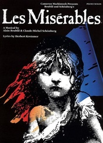

悲惨世界
内容简介：
- 《悲惨世界》（法语：Les Misérables，又译孤星淚）是由法国音乐剧作曲家克劳德-米歇尔·勋伯格和阿兰·鲍伯利共同创作的一部音乐剧，改编自维克多·雨果的同名小说。故事以1832年巴黎共和党人起义为背景，讲述了主人公冉阿让在多年前因为家人没有食物而去偷面包遭判重刑，假释后计划重新做人、改变社会，但却遇上种种困难的艰辛历程。该剧于1980年在法国巴黎的体育宫首次公演，原本预计上演八周，结果延长加演，共演出了16周，因之后的场地时程已被预订才不得不下档。
- 悲惨世界曾被英国BBC电台第二台的听众选为“全国第一不可或缺的音乐剧”。2005年10月8日，该剧在伦敦皇后剧场庆祝20周年，而且在上映前便已经预订演出至2007年1月6日，取代了安德鲁·洛伊·韦伯的《猫》，成为伦敦西区上演年期最长的音乐剧。《悲惨世界》与《猫》、《歌剧魅影》和《西贡小姐》一同被认为是1980年代以来，欧洲最具影响力的音乐剧之一。